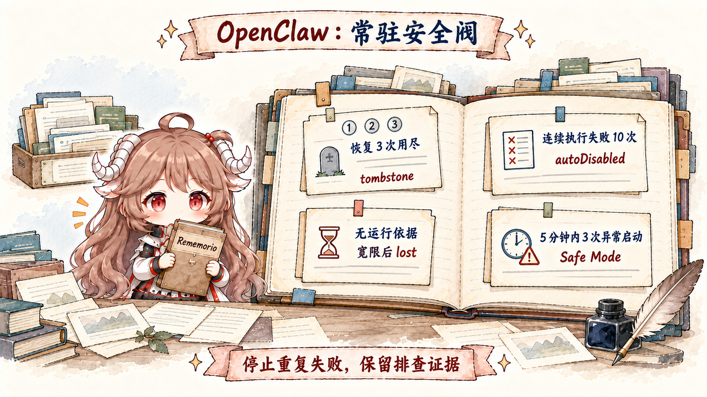

想象一个值班 Agent：每半小时看一次有没有值得提醒的事；工作日上午七点生成日报；收到构建事件时启动隔离分析；长任务完成后马上通知；Gateway 升级重启时继续未完成对话。把这些需求都塞进一个“while true + sleep”，会立刻碰到四个问题：错过的 tick 是否补跑，运行记录放哪里，外部消息是否重复发送，进程中断后谁判断上一次做到哪一步。
OpenClaw 把这几件事交给不同模块：Scheduler 决定何时触发；Session 与 Agent Runtime 执行一次 turn；Task 和 Cron History 记录运行结果；Channel Delivery 保存外部发送回执；Recovery 只根据这些持久记录作决定。进程内的 Promise、连接和模型流可以消失，但新进程必须能从数据库判断工作是否开始、是否完成、是否已经发给用户。
读完后你应该能回答。Heartbeat、Automation 与 Task 分别保存什么；为什么关闭 Automations 后定时 Heartbeat 也会停止；Heartbeat 的运行会话与投递目标为什么互不决定；Cron 重启后怎样处理逾期 Job；Task 为什么不能代替 Scheduler；执行成功与发送成功怎样分开记录；Gateway 如何发现被中断的主会话；何时续跑、何时提示重发；以及 tombstone、lost、autoDisabled、crash-loop breaker 各自终止哪一种重复失败。
本文依据。源码仍固定在 c549250。默认值、重试次数与保留时间只描述这个快照；更稳定的结论是：运行状态要持久化，外部发送要可去重，无法证明安全时就停止自动恢复。
一、时间触发怎样唤醒 Agent
1.1 “常驻”要拆成触发、执行、记录与投递
| 问题 | 由谁处理 | 持久记录 | 不能证明什么 |
|---|---|---|---|
| 什么时候醒 | Heartbeat monitor / Automations scheduler / hook | job、schedule、next run、trigger state | 不能证明工作已经完成 |
| 谁在执行 | Session Lane / Agent Run / Child Runtime | sessionKey、runId、对应的 Session 或进程 | 不能证明结果已对外发送 |
| 发生了什么 | Task registry / cron run history / transcript | queued、running、terminal、result | 不是下一次调度器 |
| 用户是否收到 | Delivery queue / receipt / requester session | delivery claim、idempotency key、provider receipt | 不能把不安全执行自动重放 |
很多“偶尔重复提醒”或“重启后任务消失”的根因，就是把其中两列合并。一个 task row 仍是 running，不一定进程还活着；一个 agent run succeeded，不一定消息已 delivered；一个 cron job 还 enabled，也不代表 Gateway 停机期间应该把每个错过的 occurrence 全部补跑。
1.2 时间来源不只有定时器
OpenClaw 能被多种事件唤醒：用户/ChannelPlugin 的外部消息、heartbeat cadence、at/every/cron schedule、authenticated webhook、Gmail PubSub、受监督 stream、background task completion、restart sentinel continuation。它们最终可能都启动一个 Agent turn，但入场前的身份与重复语义不同。
外部 Webhook 需要认证与幂等键；每次 Cron 触发都有 jobId 和 runId；子任务完成事件已经关联 Task 与 Run；Heartbeat Tick 则由系统内部生成。如果把它们都改成“塞一条用户消息”，后续就无法判断事件来自哪里，也无法可靠去重。
1.3 Heartbeat 是主会话巡检，不是后台任务
Heartbeat 是周期性的 Agent Turn，默认运行在 Agent 的主会话。它可以读取巡检便笺、当前会话信息与配置允许的启动文件，然后回答“无事”或给出提醒。它不会创建后台 Task 记录，普通交互 Turn 也不会；只有 ACP、Subagent、Automation、Gateway CLI 等脱离主对话运行的活动才写入 Task 表。
这条界线很实用：/tasks 没有 heartbeat row，不代表 heartbeat 没跑；task registry 也不该拿来保存“下次半小时后执行”的 schedule。要查 heartbeat，看 monitor job、last heartbeat 与 heartbeat logs；要查 detached run，才看 task board。
1.4 Automation 保存 Heartbeat 的 Tick
cron/heartbeat-monitor.ts 把每个启用 heartbeat 的 Agent 收敛成一个 system-owned automation job，declaration key 形如 heartbeat:<agentId>，payload kind 是 heartbeat，sessionTarget 是 main。配置是 desired state，持久 monitor row 才拥有实际 tick 与 anchor。
因此 cron.enabled=false 或 OPENCLAW_SKIP_CRON=1 会停止 scheduled heartbeat；没有另一套隐藏 timer 兜底。config reload 和 Gateway startup 会把 heartbeat config 写回 monitor job，doctor --fix 可补齐缺失或陈旧的声明。禁用 cadence 时 row 可保留为 disabled，scratch 也保留，之后重新启用还能继续使用。
默认 cadence 通常是 30 分钟；某些 Anthropic OAuth/token 默认会在未显式设置时调整为 1 小时。它表达的是巡检频率，不是精确 SLA。需要“每个工作日 09:00 准时”时，用 cron schedule。
1.5 Heartbeat 用安静协议避免刷屏
默认 prompt 明确要求只跟随 heartbeat monitor scratch，不从旧聊天臆测 recurring task；没有需要关注的内容就返回 HEARTBEAT_OK。结构化路径可调用 heartbeat_respond，用 notify=false 表示静默，用 notify=true 加 notificationText 表示提醒；结构化结果优先于文本 fallback。
HEARTBEAT_OK 位于回复开头或结尾时会被识别，token 被去掉，剩余内容很短则整条 suppress。它出现在正文中间不会被当作 ack。alert 不应再附带 OK token。这个协议的目的不是省几个字符，而是让“定期检查成功且无变化”成为可审计、却默认不产生外部噪声的 terminal outcome。
{
agents: {
defaults: {
heartbeat: {
every: "30m",
target: "last",
lightContext: true,
isolatedSession: true,
activeHours: { start: "09:00", end: "22:00" }
}
}
}
}1.6 运行会话与投递目标互不决定
heartbeat.session 决定模型在哪段 session context 里运行，默认 main；target/to/accountId 决定外部提醒送到哪里。target="none" 时 turn 仍会执行，只是不对外发送；target="last" 才解析最近可投递 channel。把 session 指到某个 thread，也不会自动把 output 投回那个 thread。
isolatedSession=true 为每次巡检创建新 transcript，避免携带整段对话；delivery routing 仍可使用 main session 的上下文。lightContext=true 再跳过 workspace bootstrap，只注入 monitor scratch。二者适合纯状态检查，但如果巡检需要长期 conversation decision 或 workspace instructions，就要显式承担更多 context。
1.7 Heartbeat 会让路，不与活跃工作争抢
scheduled heartbeat 在 main lane、automation lane、同 Agent active reply/embedded run 或目标 session 有 active/queued work时会 defer。manual/immediate wake 可以绕过较宽的 same-agent precheck，但仍尊重 main、automation 与 target-session busy guard。不同 Agent 不会因为兄弟 Agent 忙就互相暂停。
activeHours 再按显式 IANA timezone、user timezone 或 host timezone 判断。窗口外不是“稍后补这一 tick”，而是跳过直到下一个窗口内 tick。同一个 start/end 表示零宽窗口，会永远跳过。对业务语义敏感的时间点，必须把 timezone 与 missed-run policy 写进 automation，而不是依赖近似 heartbeat。
二、Automation、Task 与完成投递怎样配合
2.1 Automation 保存定时规则
Automations 在 Gateway 进程内调度，job definition、runtime state 与 run history 存在共享 SQLite。支持一次性 at、固定间隔 every、带 timezone 的 cron，以及 on-exit、stream 等事件源。Gateway 必须在运行才能真正 fire，但 restart 不会丢 schedule。
每次 automation run 都创建 task record，即使是 main-session job；notify policy 默认 silent，因为 scheduler 自己拥有 delivery。一次性 job 成功后默认删除，除非显式 keep。recurring top-of-hour cron 默认可 stagger，降低整点惊群；需要严格时刻时再用 exact。
启动时，逾期的 Isolated Agent Turn Job 会重新安排下一次运行，而不是在 Channel 刚连接时立刻补跑。持久化定时规则并不保证“停机期间每个 Tick 都至少执行一次”。如果业务必须补跑，Payload 应读取外部系统保存的处理水位，算出尚未处理的时间段，再用业务幂等键执行。
2.2 同一个 Job 有四种 Session 形态
| sessionTarget | 上下文 | 适合 | 主要风险 |
|---|---|---|---|
main | 向 scheduler lane 注入 self-contained system event | 提醒、唤醒、轻量主会话动作 | 不要假设自动带 heartbeat scratch |
isolated | 每次新 cron:<jobId> transcript | 日报、后台 chores、一次性分析 | 必须给完整 prompt 与 delivery |
current | 创建时绑定当前 session | 明确依赖当前 conversation 的重复工作 | 历史增长与 stale context |
session:custom-id | 跨 run 持久 named session | 需要累计上下文的长期 workflow | 状态漂移，需要显式 reset/归档策略 |
main automation event 不会自动继承默认 heartbeat prompt 或 monitor scratch；需要读取时应在 event 中明说。isolated run 会保留安全的模型/思考偏好，却不继承旧 row 的 channel、elevated、origin 或 ACP binding。所谓 fresh session 必须包括副作用路由也重新解析，不能只换 transcript id。
2.3 无人值守任务在创建时固定权限
automation 运行时没有人在旁边回答澄清或点击临时 approval。它的最终回复应是 deliverable 或明确失败，而不是“我准备开始”。需要交互审批的动作不适合无人值守 schedule；更稳妥的是只读巡检后通知人，由前台 turn 执行高风险变更。
Agent 创建的 automation 会保存显式 tool policy，并被创建 turn 的有效工具面封顶；后续不能扩到创建者当时没有的工具。authenticated operator 创建 job 且未传 --tools 时则会保存显式 *，这是管理员授权语义，不应与模型侧的默认最小权限混淆。
Command Payload 的权限更高：它直接在 Gateway 主机上执行 argv，不经过模型可见 Exec Tool 的审批和 Policy。只有经过授权的 Operator 才能创建或编辑这类 Job，相关配置也应进入审计。
2.4 Task 记录运行，不负责下一次触发
Task registry 记录 ACP、subagent、所有 automation run、Gateway-backed CLI 与部分后台 exec/media work。状态沿 queued → running → terminal，terminal 可为 succeeded、failed、timed_out、cancelled 或 lost。agent run lifecycle 自动推进这些状态；用户不需要手写状态转换。
task-registry.store.sqlite.ts 把 task_runs 与 task_delivery_state 写入共享状态数据库。每条 Task 可关联 requesterSessionKey、childSessionKey、agentId、runId、ownerKey 与 deliveryStatus，因此能够回答“谁启动、在哪里运行、由哪个 Runtime 处理、结果发到哪里”。但它没有 nextRunAt，不能代替 Cron 决定下一次触发。
queued → running → succeeded | failed | timed_out | cancelled | lost
executionStatus: succeeded
deliveryStatus: session_queued | delivered | failed
terminalOutcome: succeeded | blocked2.5 完成事件会主动推送，必要时唤醒 Heartbeat
detached task terminal 后有两条主要 delivery：若有合法 requesterOrigin，可直接去 channel；group/channel 的 subagent completion 通常先回 requester session，让父 Agent 生成可见回复。若 direct delivery 失败或没有 origin，完成事件进入 requester session queue，并触发 immediate heartbeat wake，不必等下一个 scheduled tick。
这解释了为什么轮询通常是错误形状。启动一次任务后，runtime 已经知道 requester 与 completion identity；不断查询只会增加模型 turn 和 race。只有排障、人工干预或审计才需要 tasks list/show/audit。
execution 与 delivery 继续分开：child succeeded 而 result queue 超时，task 可以保持 execution succeeded，同时 terminalOutcome 是 blocked。canonical result 会保留供 retry/dismiss；不能为了让 dashboard “红起来”就篡改真实执行结果。
三、Gateway 重启后怎样决定续跑或停止
3.1 重启后仍然存在的是数据库记录

对话记录与 Session Row 存在每个 Agent 各自的 SQLite 中；Subagent、Task、Flow Registry、Cron Job 与投递队列存在共享状态数据库中；Agent 主动请求的重启另有 Restart Sentinel。JavaScript Promise、Socket、Provider Stream 与原进程中的执行对象都会消失。恢复流程不会让它们重新出现，而是把数据库记录与新进程中实际运行的工作逐项核对。
优雅 restart 会先停止接新工作，然后给 active turn/background task 一个 drain budget，默认最长五分钟。大多数更新因此不需要 resume。超过预算或 crash 导致中断时，session 才进入 recovery path；drain 窗口中新工作明确拒绝，不会悄悄塞进即将退出的进程。
3.2 主会话在执行前就写入恢复声明
普通文本 Turn 进入已有主会话时，会在同一个 SQLite 事务里写入用户消息、running 状态与恢复投递声明，然后才调用模型或 Hook。关闭进程时还会标记仍在运行的 Session；硬崩溃之后，启动扫描会寻找“数据库仍写着 running、但新进程中没有对应工作”的 Row，并清理过期的对话锁。
三条路径互相补充：入库事务覆盖刚接收请求就崩溃的情况，关闭标记覆盖有序中断，启动扫描覆盖来不及清理的强制终止。只看对话记录的最后一条是不是用户消息，会把“回复已经生成但还没发出”和“请求从未正式开始执行”混为一谈。
3.3 每次恢复复用同一个 Dispatch ID
Gateway 启动几秒后，为符合条件的 session 注入 synthetic system continuation，告诉 Agent 上次 turn 被 restart 打断，并从现有 transcript 继续。如果 final reply 已经生成但未投递，恢复上下文会带上它，优先完成 delivery，而不是重新调用工具做一遍。
每次重试都复用同一个持久 Dispatch ID，因此连接结果不确定时不会启动两份恢复。启动协调可以做短期网络重试；同一轮被中断的主会话另有最多三次的恢复预算，并跨重启保存。系统在 Dispatch 前先消耗一次额度，只有明确得知请求未被接收时才退回；结果不确定时保留计数，宁可停止也不冒险重复执行外部操作。
同一 session 若已经被 foreground work 占有，recovery 等其 settle，不争抢 lane。预算耗尽后写 tombstone；operator 检查后用 /new 或 /reset 建 replacement。doctor --fix 能修矛盾 flag，却不会偷偷重开已经 tombstoned 的 cycle。
3.4 对话可续写，不代表工具可重放
partial streamed text 可留在 transcript，continuation 从其下方继续；dangling tool call 会从下一次 provider payload 删除，并把恢复 turn 限制到 restart-safe tool。若 tail 是 provider failure、stale pending approval 或无法证明安全的 side-effecting state，OpenClaw 不盲跑，而是给一次 resend notice。
只通过 Message Tool 发送的回复会保存更严格的关联记录：最终发送前先写投递意图，Provider 确认后再写回执。恢复时，已经确认 delivered 的消息只补齐状态，不再次调用 Message；明确失败可以清理；Provider 结果未知时则停止自动发送，避免同一条外部消息出现两次。原请求者身份、Channel 或 Thread 限制与来源投递模式也随恢复声明保存，重启不能借机改变目标。
read-only Code Mode 是受审计的特例：只有被标成 restart-safe 且工具目录通过只读过滤的工作，才允许重建；任何 side-effecting catalog/namespace tool 仍走 resend notice。恢复能力不是给所有工具加一个通用 retry wrapper。
3.5 Subagent、Task 与 Cron 分别恢复
主会话扫描器会排除由专门模块处理的 Subagent、Cron 与 ACP Session。Subagent Registry 从 SQLite 恢复，并尝试继续原 Task；中断超过两小时的 Run 不会隔夜复活，重复失败的 Child 会标记为 wedged 或 tombstone。ACP 的实际 Turn 由外部 Runtime 或已连接客户端执行，OpenClaw 只核对其 Managed Task 与 Session Binding。
Task Registry 在启动时加载，之后由 Sweeper 周期检查实际运行状态：ACP 要有进程内 Turn，Subagent 要有 Child Session，Automation 则先看 Scheduler 中的活动记录，再看持久化的 Run History。对应工作消失并超过宽限期后才标为 lost，避免重启瞬间把所有尚未恢复的任务误判为死亡。Terminal Task 默认保留七天，lost 记录保留时间更短，随后按 cleanupAfter 清理。
cron job definition 与 run history 会恢复，scheduler re-arm；但 missed occurrence 的处理服从各 schedule/run 类型，而不是统一 replay。持久化提供可判断的事实，不自动提供业务 exactly-once。需要外部副作用 exactly-once 时，job 自己还要使用业务键、watermark 或目标系统的幂等 API。
四、怎样限制重复失败并排查系统
4.1 达到上限后停止自动重试

主会话恢复最多尝试三次；普通 Task 失去对应进程并超过宽限期后变为 lost；Recurring Automation 连续十次执行失败会 autoDisabled，定时计算连续三次出错也会停用；五分钟内出现三次非正常启动会触发 crash-loop breaker。此时 Gateway 的管理接口仍然可用，但 Channel 等附属服务不会自动启动。
这些状态让自动化停在可检查的位置。tombstone 防止同一 Session 重复外部操作，lost 暴露失去对应进程的任务，autoDisabled 防止错误定时持续消耗资源，Safe Mode 则让 Operator 仍能进入 Gateway 修复配置。解决根因后，再由 Operator 明确执行 enable、reset、retry 或启动 Channel。
4.2 按定时、执行、投递三类记录排查
openclaw automations list --all
openclaw automations runs --id <jobId> --limit 20
openclaw tasks list
openclaw tasks audit
openclaw sessions --json
openclaw channels status
openclaw gateway status
openclaw logs第一类记录看定时：Job 是否启用、nextRunAt、时区与 lastRunStatus。第二类记录看执行：Task 或 Runtime 处于 queued、running 还是 terminal，以及对应进程是否仍在运行。第三类记录看投递与恢复：deliveryStatus、待发队列、Session 恢复声明、tombstone 与回执。定时没有触发时，查 Gateway、Cron 开关、activeHours 与忙碌保护；运行没有结束时，查对应进程与超时；执行成功却没有消息时，查投递路由与被阻塞的完成事件；重启后重复发送时，查 dispatch ID、幂等键与回执，不要先增加重试次数。
4.3 用八条规则串起整个 Runtime
- 消息先经过 Gateway 与 Routing。身份、Binding 与 sessionKey 决定消息进入哪段会话。
- Session Lane 决定执行顺序。Steer、Followup、Interrupt 与子任务都要排进对应队列。
- 每轮 Context 都重新组装。Workspace、Transcript、Memory 与 Compaction 分别提供不同信息。
- 能力按 Turn 装配。Skill 提供指导，Tool、Plugin 与 Hook 才能直接参与执行。
- 安全来自多层交集。policy、sandbox、approval、elevated 分别回答不同问题。
- 委派只向下收窄。Child 获得明确任务与较少权限，Parent 仍负责最终交付。
- 跨时间工作依赖持久记录。Schedule、Run、Task、Delivery 与 Recovery Claim 分别记录触发、执行和发送状态。
- 恢复必须有上限。能证明安全才续跑，结果不明就停止自动重放，重复失败则 tombstone 或 disable。
至此，OpenClaw 不再只是“Channel → Model → Reply”的聊天壳。Gateway 接收并路由消息，Session 保存对话，Policy 限制权限，SQLite 状态与可去重的发送回执让工作穿越重启。阅读任何新功能时，都可以继续问同一组问题：入口由谁处理，状态写在哪里，哪个动作会影响外部系统，完成由什么记录证明，进程消失后又根据什么继续。
参考源码与文档
- cron/heartbeat-monitor.ts、infra/heartbeat-wake.ts、auto-reply/heartbeat.ts：monitor job、busy guard、wake 与安静响应协议。
- cron/service.ts、cron/store.ts、cron/schedule.ts：持久 job、schedule 与 scheduler lifecycle。
- task-registry.store.sqlite.ts、task-registry.maintenance.ts：task/delivery store、reconciliation、lost 与 retention。
- main-session-restart-recovery.ts、main-session-recovery-state.ts、server-restart-sentinel.ts：启动扫描、恢复状态与 agent-requested restart continuation。
- Heartbeat、Automations、Background tasks、Restart recovery：官方运行与恢复契约。